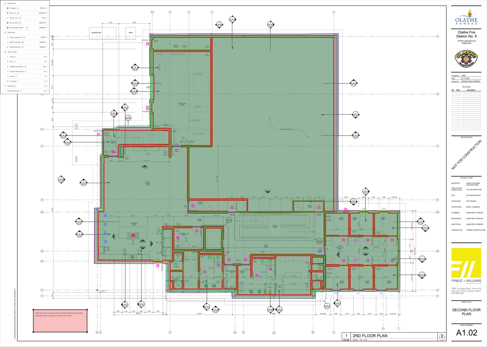

Project / Assignment
Togal.AI Estimating in Construction
An assignment focused on how AI-assisted takeoffs and estimating tools can support construction planning.

Description
This assignment focused on exploring how Togal.AI can be used in construction estimating. It involved uploading different sets of plans and analyzing how AI can automatically generate quantity takeoffs from drawings and assist in the estimating process. The goal was to understand how technology can reduce manual work and improve efficiency in early project planning.
Relevance to AEC
Estimating is a critical part of construction planning and budgeting, making it highly relevant to the AEC industry. Using AI tools like Togal can significantly reduce the time required for quantity takeoffs and improve accuracy. This allows teams to make faster, more informed decisions.
What I Learned
Through this assignment, I learned how AI can be applied directly to real-world construction processes, not just design. It showed me how tools like Togal can support faster and more accurate estimating, which is a key part of project success. It also reinforced how important it is to adapt to new technologies in this industry.
Looking Ahead
Assignments like this make AI feel less theoretical and much more practical.
The more I studied these tools, the more clear it became that AI in AEC is not just about hype. It has real potential to affect workflow, cost planning, and project efficiency in ways that matter.